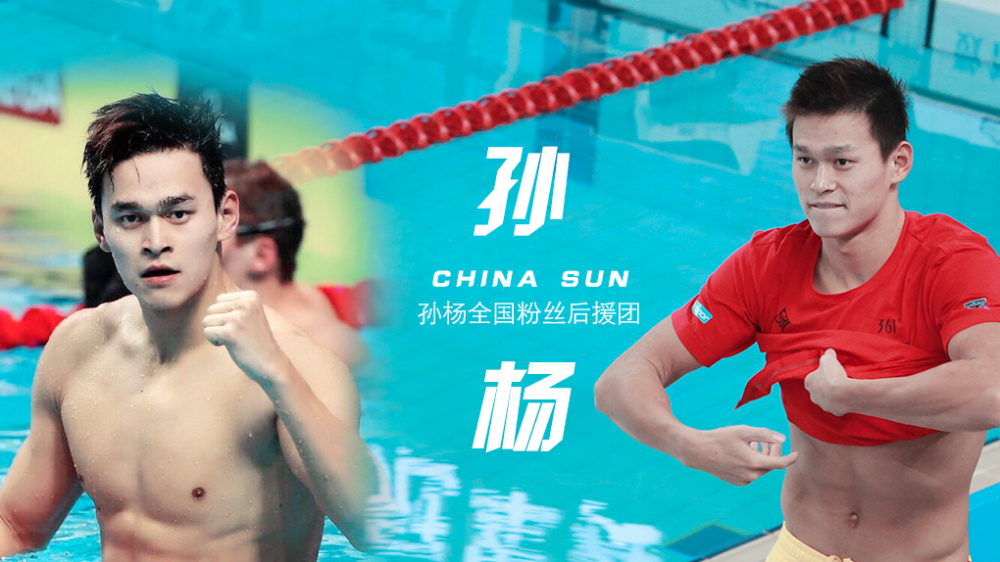

인물소개

항저우 출신의 세계적인 수영선수의 쑨양은 2008년 베이징 올림픽에 참여하였으며,2010년 아시안 게임에서 1500m자유형을 아시아 기록으로 우승하면서 이 종목과 그의 다른 2개의 메달은 2010년 cctv 스포츠 시상식에서"올해의 신인 선수"로 임명되었다. 2011년 세계 수영 선수권 대회 1500m자유형에서 14분 34.14초로 세계신기록을 수립하여 2001년 그랜트 해켓이 세운 기록을 깻다.2012년 런던 올림픽에 참가하여 자유형 400m에서 3분 40.14초의 올림픽 신기록으로 전 올림픽 신기록으로 전 올림픽 금메달리스트였던 대한민국의 박대환을 제치고 금메달을 흭득하였고,자유형 200m에서는 박대환과 같은 1분 44.93초의 기록으로 공동으로 은메달을 흭득하였다.그 경기에서 마이클 펠프스와 더불어 2개의 개인적 타이틀을 우승하는 남자 수영 선수가 되었다.